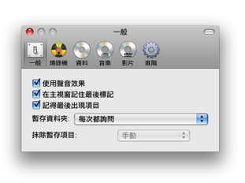
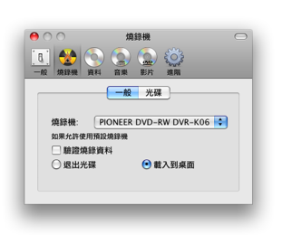
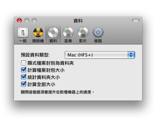
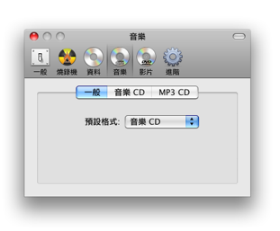
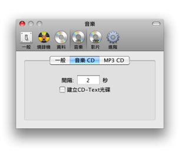
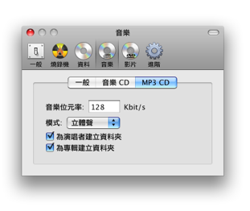
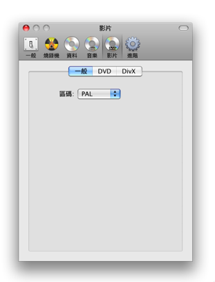
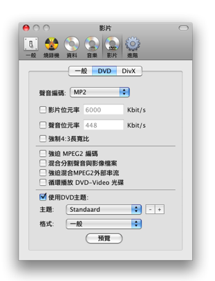
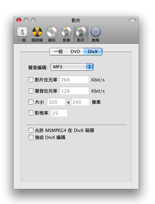
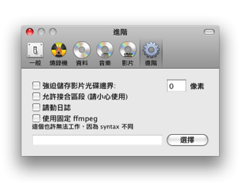

偏好設定
Burn 有許多的設定. 我們將在這裡詳述.
一般:

一般設定是Burn的界面. 也設定暫存資料夾與如何操作他們.
燒錄器:

預設燒錄器與在燒錄後的使用設定.

第一個設定在燒錄視窗顯示可超燒空間. 最後的選項是使用在當燒錄器中沒有光碟時.
資料:

如果Burn沒有記憶最後的彈出視窗(一般)您可以設定預設資料格式. 檔案封包是資料夾看作是檔案, 您可以設定如何顯示他們.
您也可以設定不同的大小選項. 最後一個是處理器增強.
音樂:

如果Burn沒有記憶最後的彈出視窗(一般)您可以設定預設聲音格式.

設定給音樂CD光碟. Pregap 是音樂軌道開始前的秒數. CD-Text 可以被新增到光碟. 一些音樂播放器可以使用他取得關於軌道的資訊
(像是作者,專輯等). 但是必須燒錄器有支援.

設定給MP3光碟. 音樂位元率是使用每秒幾 Kbit . 較大的數值檔案將會變得較大, 但品質較佳. Burn 也可以在MP3光碟裡建立資料夾.
影片:

如果Burn沒有記憶最後的彈出視窗(一般)您可以設定預設的影片格式. 也可以在這裡設定區碼.

DVD分頁有設定品質,大小與音樂格式的選項. 也有一些進階選項對建立DVD-Video光碟也許是有用的. 最後區段是選擇主題,
一般格式(4:3) 與寬螢幕 (16:9).

Divx分頁有設定品質,大小與音樂格式的選項. 他也可以允許 MSMPEG4 但不一定能執行在所有的DivX播放器. 要轉換已經準備好的Divx avi 檔案您可以強制編碼.
進階:

儲存邊界將會建立邊界以輔助顯示影片在設備中該縮放多少的影片. 這個選項不是完整的工具, 他還不能計算長寬比.
當燒錄太長時超燒將移除錯誤. 當如果燒錄器無法確定可以控制他時,使用這個選項要注意. 日誌大多使用在燒錄時找到問題.
Burn使用ffmpeg以轉換影片與聲音檔案. 您可以選擇使用您自己自定的版本, 但是他也許執行起來是沒有差別的.